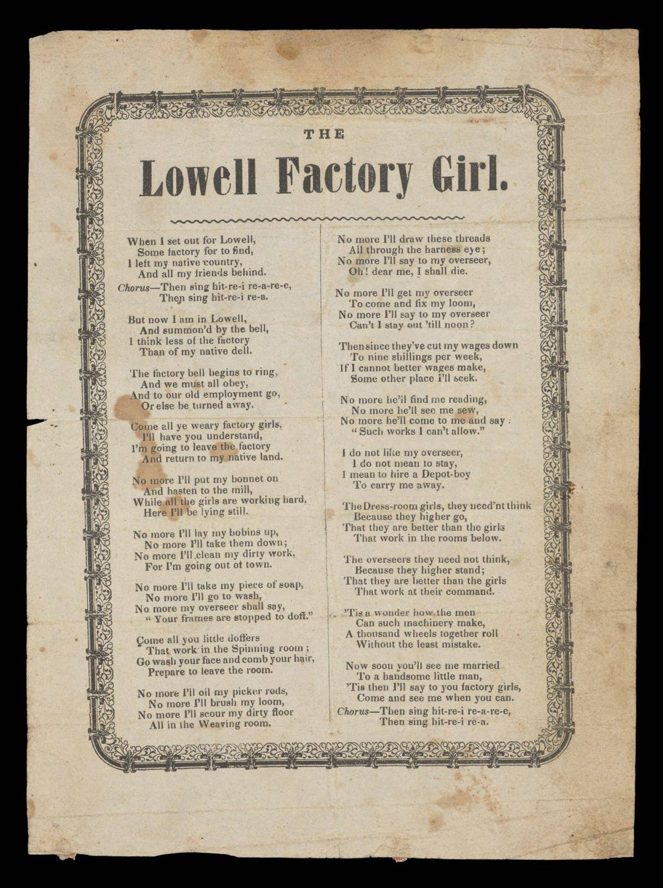

| Field | Detail |
| TOC Fit | Chapter 8 · Essay prompt 8.3 (The Mill Girls of Lowell) |
| Why Here | A short printed song or poem about the Lowell mill worker, attributed by its holding library to the Lowell Offering editor Harriet Farley. Verse written for and about mill women lets students consider how the “factory girl” presented herself, and was presented, to the public in the years when her independence and respectability were being debated. |
| Treatment | Printed text to be transcribed from the repository’s page images |
Harriet Jane Farley (ca. 1812–1907) grew up in New Hampshire, the daughter of a Congregational minister, and went to work in the Lowell mills in the late 1830s to support herself and help her family. She joined one of the operatives’ “improvement circles” and in 1842 became editor of the Lowell Offering, the mill women’s literary magazine, and later its co-publisher with Harriot Curtis. Farley defended mill women against the charge that factory work degraded them, while resisting efforts by labor reformers to turn the magazine into a platform for protest. Songs and poems about the “factory girl” circulated widely in the 1830s and 1840s. Some celebrated her wages, freedom, and self-improvement; others, sung at strikes and labor meetings, lamented the bell, the overseer, and the boardinghouse. This item belongs to that popular genre, and its exact origin is not documented. Editorial note. The item is held by the Osher Map Library and Smith Center for Cartographic Education, University of Southern Maine (Osher Collection, barcode 57797, accession no. OML-1842-24), which dates it 1842, gives the place as Lowell, Massachusetts, measures it at 22.5 × 16.6 cm on two pages, and marks it public domain (Public Domain Mark 1.0). The library’s description says the piece is “attributed” to Harriet Jane Farley and “likely came from” the Lowell Offering; neither the attribution nor the original place of publication has been confirmed for this reader. The text is printed only on the page images and has no transcription on the repository page, so it must be transcribed from the images before use. The planner’s link (digitalprojects.usm.maine.edu, “Women as Agents of Change”) no longer resolves; the item now lives on the Osher Map Library site. CAUTION: Attribution and date are the repository’s and are uncertain; do not quote this as Farley’s work without checking the printed page. The repository also holds an image of the blank back of the sheet, not reproduced here. The printed song text on the front is clearly legible in the reproduced image; it was not retyped into this entry. |
|
 |
|
UNIT 3 · AN EXPANDING NATION | HISTORY B17A | DANIEL GARZA, M.A.
|